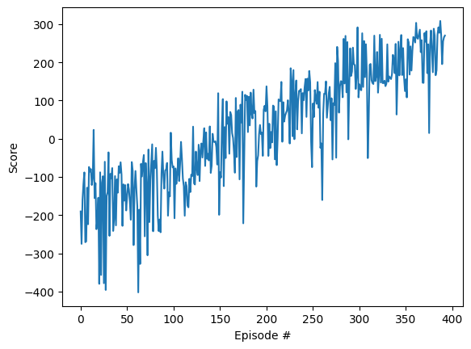

import gymnasium as gym
import numpy as np
import matplotlib.pyplot as plt
from matplotlib.animation import FuncAnimation
import torch
import collections
import IPython
import random[Essays] 강화학습 v3
imports
기존알고리즘
BUFFER_SIZE = 500*20 # replay buffer size
BATCH_SIZE = 128 # minibatch size
GAMMA = 0.99 # discount factorclass ReplayBuffer:
"""Fixed-size buffer to store experience tuples."""
def __init__(self):
"""Initialize a ReplayBuffer object.
Params
======
action_size (int): dimension of each action
buffer_size (int): maximum size of buffer
batch_size (int): size of each training batch
seed (int): random seed
"""
self.action_size = 4
self.memory = collections.deque(maxlen=BUFFER_SIZE)
self.batch_size = BATCH_SIZE
self.experience = collections.namedtuple("Experience", field_names=["state", "action", "reward", "next_state", "done"])
def add(self, state, action, reward, next_state, done):
"""Add a new experience to memory."""
e = self.experience(state, action, reward, next_state, done)
self.memory.append(e)
def sample(self):
"""Randomly sample a batch of experiences from memory."""
experiences = random.sample(self.memory, k=self.batch_size)
# Convert to torch tensors
states = torch.from_numpy(np.vstack([e.state for e in experiences if e is not None])).float()
actions = torch.from_numpy(np.vstack([e.action for e in experiences if e is not None])).long()
rewards = torch.from_numpy(np.vstack([e.reward for e in experiences if e is not None])).float()
next_states = torch.from_numpy(np.vstack([e.next_state for e in experiences if e is not None])).float()
# Convert done from boolean to int
dones = torch.from_numpy(np.vstack([e.done for e in experiences if e is not None]).astype(np.uint8)).float()
return (states, actions, rewards, next_states, dones)
def __len__(self):
"""Return the current size of internal memory."""
return len(self.memory)class Agent():
"""Interacts with and learns from the environment."""
def __init__(self):
"""Initialize an Agent object.
Params
======
state_size (int): dimension of each state
action_size (int): dimension of each action
seed (int): random seed
"""
self.state_size = 8
self.action_size = 4
self.seed = 0
# Q-Network
self.net = torch.nn.Sequential(
torch.nn.Linear(8,128), # 8은 state_size
torch.nn.ReLU(),
torch.nn.Linear(128,64),
torch.nn.ReLU(),
torch.nn.Linear(64,32),
torch.nn.ReLU(),
torch.nn.Linear(32,4)) # 4는 action_size
self.optimizer = torch.optim.Adam(self.net.parameters(), lr=0.0001)
# Replay memory
self.memory = ReplayBuffer()
# Initialize time step (for updating every UPDATE_EVERY steps)
self.t_step = 0
def step(self, state, action, reward, next_state, done):
# Save experience in replay memory
self.memory.add(state, action, reward, next_state, done)
# If enough samples are available in memory, get random subset and learn
if len(self.memory) > BATCH_SIZE:
experiences = self.memory.sample()
self.learn(experiences, GAMMA)
def act(self, state, eps=0.):
"""Returns actions for given state as per current policy.
Params
======
state (array_like): current state
eps (float): epsilon, for epsilon-greedy action selection
"""
state = torch.from_numpy(state).float().unsqueeze(0)
action_values = self.net(state)
if random.random() > eps:
return np.argmax(action_values.data.numpy())
else:
return random.choice(np.arange(self.action_size))
def learn(self, experiences, gamma):
"""Update value parameters using given batch of experience tuples.
Params
======
experiences (Tuple[torch.Variable]): tuple of (s, a, r, s', done) tuples
gamma (float): discount factor
"""
# Obtain random minibatch of tuples from D
states, actions, rewards, next_states, dones = experiences
## Compute and minimize the loss
q_targets_next = self.net(next_states).detach().max(1)[0].unsqueeze(1)
q_targets = rewards + gamma * q_targets_next * (1 - dones)
### Calculate expected value from local network
q_expected = self.net(states).gather(1, actions)
loss = torch.nn.functional.mse_loss(q_expected, q_targets)
self.optimizer.zero_grad()
loss.backward()
self.optimizer.step()env = gym.make('LunarLander-v2',render_mode='rgb_array')agent = Agent()n_episodes = 2000
max_t = 500
eps_start = 1.0
eps_end = 0.01
eps_decay = 0.995
playtimes=[]
scores = [] # list containing scores from each episode
scores_window = collections.deque(maxlen=100) # last 100 scores
eps = eps_start # initialize epsilon
for i_episode in range(1, n_episodes+1):
state, _ = env.reset()
score = 0
for t in range(max_t):
## STEP1:
action = agent.act(state, eps)
## STEP2:
next_state, reward, done, _, _ = env.step(action)
## STEP3:
agent.step(state, action, reward, next_state, done)
## STEP4:
state = next_state
## STEP5:
score += reward
if done:
playtimes.append(t)
break
scores_window.append(score) # save most recent score
scores.append(score) # save most recent score
eps = max(eps_end, eps_decay*eps) # decrease epsilon
print('\rEpisode {}\tAverage Score: {:.2f}\tPlaytime: {:.2f}'.format(i_episode, np.mean(scores_window), np.mean(playtimes)), end="")
if i_episode % 100 == 0:
print('\rEpisode {}\tAverage Score: {:.2f}\tPlaytime: {:.2f}'.format(i_episode, np.mean(scores_window), np.mean(playtimes)))
torch.save(agent.net.state_dict(), 'checkpoint.pth')
if np.mean(scores_window)>=200.0:
print('\nEnvironment solved in {:d} episodes!\tAverage Score: {:.2f}'.format(i_episode, np.mean(scores_window)))
torch.save(agent.net.state_dict(), 'checkpoint.pth')
breakEpisode 100 Average Score: -145.92 Playtime: 108.96
Episode 200 Average Score: -23.36 Playtime: 139.995
Episode 300 Average Score: 97.01 Playtime: 155.116
Episode 393 Average Score: 200.63 Playtime: 192.80
Environment solved in 393 episodes! Average Score: 200.63plt.plot(scores)
plt.ylabel('Score')
plt.xlabel('Episode #')Text(0.5, 0, 'Episode #')
frames = []
agent = Agent()
agent.network.load_state_dict(torch.load('checkpoint.pth'))
state,_ = env.reset()
done = False
while not done:
frames.append(env.render())
action = agent.act(state)
state, reward, done, _,_ = env.step(action)
env.close()AttributeError: 'Agent' object has no attribute 'network'fig, ax = plt.subplots()
ani = FuncAnimation(fig,lambda i: ax.imshow(frames[::10][i]),frames=len(frames[::10]))/home/cgb2/anaconda3/envs/torch/lib/python3.11/site-packages/matplotlib/animation.py:1740: UserWarning: Can not start iterating the frames for the initial draw. This can be caused by passing in a 0 length sequence for *frames*.
If you passed *frames* as a generator it may be exhausted due to a previous display or save.
warnings.warn(
- 방법1
# ani.save('LunarLander-v2.mp4', writer='ffmpeg', fps=15, extra_args=['-vcodec', 'mpeg4'])- 방법2
IPython.display.HTML(ani.to_jshtml())1 experience
test
env = gym.make('LunarLander-v2',render_mode='rgb_array')net = torch.nn.Sequential(
torch.nn.Linear(8,128), # 8은 state_size
torch.nn.ReLU(),
torch.nn.Linear(128,64),
torch.nn.ReLU(),
torch.nn.Linear(64,32),
torch.nn.ReLU(),
torch.nn.Linear(32,4)) # 4는 action_size optimizr = torch.optim.Adam(net.parameters(), lr=0.0001)current_state, _ = env.reset()current_statearray([-2.1142959e-04, 1.4031194e+00, -2.1430280e-02, -3.4668925e-01,
2.5178038e-04, 4.8542689e-03, 0.0000000e+00, 0.0000000e+00],
dtype=float32)net(torch.tensor(current_state))tensor([-0.0187, 0.0370, -0.1520, 0.0079], grad_fn=<AddBackward0>)_action1 = net(torch.tensor(current_state)).argmax().item()
_action11_action2 = random.choice([0,1,2,3])
_action2 3act = lambda state, eps: net(torch.tensor(state)).argmax().item() if eps < random.random() else random.choice([0,1,2,3])[act(current_state,0.95) for i in range(20)][0, 0, 2, 2, 2, 1, 2, 3, 1, 3, 2, 1, 0, 3, 0, 3, 3, 3, 0, 1][act(current_state,0.1) for i in range(20)][1, 1, 1, 1, 1, 1, 1, 1, 1, 1, 1, 1, 1, 1, 2, 1, 3, 1, 1, 1]action = act(current_state,0.05)next_state, reward, terminated, truncated, info = env.step(action)net(torch.tensor(next_state))tensor([-0.0186, 0.0368, -0.1524, 0.0075], grad_fn=<AddBackward0>)reward-2.0075750861699064qvalue_next_state = net(torch.tensor(next_state)).data.max().item()
qvalue_next_state0.036822687834501266reward + 0.99 * qvalue_next_state-1.97112062521375qvalue_current_state = net(torch.tensor(current_state)).max()
qvalue_current_statetensor(0.0370, grad_fn=<MaxBackward1>)loss = torch.mean((qvalue_current_state - (reward + 0.99 * qvalue_next_state))**2)loss.backward()optimizr.step()net(torch.tensor(current_state))tensor([-0.0182, 0.0349, -0.1537, 0.0066], grad_fn=<AddBackward0>)코드정리
env \(\to\) agent: current_state
current_state, _ = env.reset()
current_statearray([-1.12180714e-03, 1.42049658e+00, -1.13641575e-01, 4.25618768e-01,
1.30666478e-03, 2.57414915e-02, 0.00000000e+00, 0.00000000e+00],
dtype=float32)agent \(\to\) env: action
act = lambda state, eps: net(torch.tensor(state)).argmax().item() if eps < random.random() else random.choice([0,1,2,3])action = act(current_state,0.05)
action1env \(\to\) agent: reward,next_state
next_state, reward, terminated, truncated, info = env.step(action)net(torch.tensor(next_state))tensor([-0.0145, 0.0353, -0.1442, 0.0150], grad_fn=<AddBackward0>)reward1.0115680526115807agent: update (\(q\)-value generating) network
qvalue_current_state = net(torch.tensor(current_state))[action]
qvalue_next_state = net(torch.tensor(next_state)).max().data
reward2 = reward + 0.99 * qvalue_next_state
loss = torch.mean((qvalue_current_state - reward2)**2)loss.backward()optimizr.step()리플레이버퍼사용
current_state_history = collections.deque(maxlen=50000)
action_history = collections.deque(maxlen=50000)
next_state_history = collections.deque(maxlen=50000)
terminated_history = collections.deque(maxlen=50000)
reward_history = collections.deque(maxlen=50000)
qvalue_current_state_history = collections.deque(maxlen=50000)
qvalue_next_state_history = collections.deque(maxlen=50000)episode=1
### env -> agent: current_state
current_state, _ = env.reset()
current_state_history.append(current_state)
current_state_history
### agent -> env: action
act = lambda state, eps: net(torch.tensor(state)).argmax().item() if eps < random.random() else random.choice([0,1,2,3])
action = act(current_state,1)
action_history.append(action)
action_history
### env -> agent: reward,next_state
next_state, reward, terminated, truncated, info = env.step(action)
next_state_history.append(next_state)
reward_history.append(reward)
terminated_history.append(terminated)
### agent: update ($q$-value generating) network
qvalue_current_state = net(torch.tensor(current_state))[action]
qvalue_current_state_history.append(qvalue_current_state)
qvalue_next_state = net(torch.tensor(next_state)).max().data
qvalue_next_state_history.append(qvalue_next_state)
#reward2 = reward + (0.99 * qvalue_next_state)*(~torch.tensor(terminated))
#loss = torch.mean((qvalue_current_state - reward2)**2)episode=2~100 정도까지 데이터를 쌓자
playtimes = []
scores = []
for e in range(100):
current_state, _ = env.reset()
eps = 1
score = 0
for t in range(500):
current_state = next_state ## 수정
current_state_history.append(current_state)
### agent -> env: action
act = lambda state, eps: net(torch.tensor(state)).argmax().item() if eps < random.random() else random.choice([0,1,2,3])
action = act(current_state,eps)
action_history.append(action)
### env -> agent: reward,next_state
next_state, reward, terminated, truncated, info = env.step(action)
next_state_history.append(next_state)
reward_history.append(reward)
terminated_history.append(terminated)
### agent: update ($q$-value generating) network
qvalue_current_state = net(torch.tensor(current_state))[action]
qvalue_current_state_history.append(qvalue_current_state)
qvalue_next_state = net(torch.tensor(next_state)).max().data
qvalue_next_state_history.append(qvalue_next_state)
### recore score
score = score + reward
### check terminated
if terminated:
playtimes.append(t)
scores.append(score)
break(loss계산을 위한 테스트코드)
idx = np.random.randint(0,len(current_state_history),size=128)
current_state_sampled = torch.tensor(np.array(current_state_history)[idx],dtype=torch.float32)
actions_sampled = torch.tensor(np.array(action_history)[idx],dtype=torch.int64)
reward_sampled = torch.tensor(np.array(reward_history)[idx],dtype=torch.float32)
next_state_sampled = torch.tensor(np.array(next_state_history)[idx],dtype=torch.float32)
terminated_sampled = torch.tensor(np.array(terminated_history)[idx],dtype=torch.int64)actions_sampledtensor([0, 3, 1, 0, 0, 1, 0, 0, 0, 0, 1, 0, 0, 1, 0, 3, 0, 0, 3, 0, 2, 0, 0, 0,
1, 0, 1, 1, 1, 1, 0, 1, 0, 0, 1, 3, 1, 3, 3, 2, 1, 1, 1, 1, 3, 0, 0, 3,
0, 1, 3, 3, 2, 2, 3, 0, 0, 1, 2, 2, 1, 2, 3, 2, 3, 3, 1, 3, 1, 3, 2, 3,
0, 0, 0, 0, 0, 1, 1, 3, 1, 3, 0, 0, 0, 3, 3, 3, 3, 2, 2, 0, 3, 1, 3, 0,
3, 3, 2, 3, 1, 1, 1, 2, 1, 0, 3, 1, 0, 2, 0, 2, 1, 0, 3, 3, 3, 0, 0, 3,
0, 0, 3, 0, 3, 3, 1, 2])qvalue_current_state = net(current_state_sampled).gather(1,actions_sampled.reshape(-1,1)).reshape(-1)
qvalue_next_state = net(next_state_sampled).max(axis=1)[0].detach()
loss_fn = torch.nn.MSELoss()
loss = loss_fn(qvalue_current_state, reward_sampled + (0.99 * qvalue_next_state)*(1-terminated_sampled))losstensor(283.9010, grad_fn=<MseLossBackward0>)optimizr.step()최종알고리즘
current_state_history = collections.deque(maxlen=500*20)
action_history = collections.deque(maxlen=500*20)
next_state_history = collections.deque(maxlen=500*20)
terminated_history = collections.deque(maxlen=500*20)
reward_history = collections.deque(maxlen=500*20)
def save():
current_state_history.append(current_state)
action_history.append(action)
next_state_history.append(next_state)
reward_history.append(reward)
terminated_history.append(terminated)
def sample():
idx = np.random.randint(0,len(current_state_history),size=1)
current_state_sampled = torch.tensor(np.array(current_state_history)[idx],dtype=torch.float32)
actions_sampled = torch.tensor(np.array(action_history)[idx],dtype=torch.int64)
reward_sampled = torch.tensor(np.array(reward_history)[idx],dtype=torch.float32)
next_state_sampled = torch.tensor(np.array(next_state_history)[idx],dtype=torch.float32)
terminated_sampled = torch.tensor(np.array(terminated_history)[idx],dtype=torch.int64)
return current_state_sampled, actions_sampled, reward_sampled, next_state_sampled, terminated_sampledtorch.manual_seed(43052)
net = torch.nn.Sequential(
torch.nn.Linear(8,128), # 8은 state_size
torch.nn.ReLU(),
torch.nn.Linear(128,64),
torch.nn.ReLU(),
torch.nn.Linear(64,32),
torch.nn.ReLU(),
torch.nn.Linear(32,4)) # 4는 action_size
optimizr = torch.optim.Adam(net.parameters(), lr=0.0001)
loss_fn = torch.nn.MSELoss()
act = lambda state, eps: net(torch.tensor(state)).argmax().item() if eps < random.random() else random.choice([0,1,2,3])playtimes = []
scores = []
eps = 1
for e in range(2000):
eps = eps*0.995
current_state, _ = env.reset(seed=0)
score = 0
for t in range(500):
### agent -> env: action
action = act(current_state,eps)
### env -> agent: reward,next_state
next_state, reward, terminated, truncated, info = env.step(action)
### save
save()
### agnet: update network
if len(current_state_history) > 5000:
#### step1: prepare data
current_state_sampled, actions_sampled, reward_sampled, next_state_sampled, terminated_sampled = sample()
#### step2: loss
qvalue_current_state = net(current_state_sampled).gather(1,actions_sampled.reshape(-1,1))
qvalue_next_state = net(next_state_sampled).max(axis=1)[0].detach()
loss = loss_fn(qvalue_current_state, reward_sampled + 0.99 * qvalue_next_state * (1-terminated_sampled))
#### step3: backward
loss.backward()
#### step4: update
optimizr.step()
### recore score
score = score + reward
### check terminated
if terminated:
playtimes.append(t)
scores.append(score)
break
###
current_state = next_state
print('\rEpisode {}\tAverage Score: {:.2f}\tPlaytime: {:.2f}\tExperience: {}'.format(e, np.mean(scores[-100:]), np.mean(playtimes[-100:]),len(current_state_history)), end="")
if e % 100 == 0:
print('\rEpisode {}\tAverage Score: {:.2f}\tPlaytime: {:.2f}'.format(e, np.mean(scores[-100:]), np.mean(playtimes[-100:])))
#torch.save(agent.network.state_dict(), 'checkpoint.pth')Episode 0 Average Score: -262.47 Playtime: 68.00 Experience: 69
Episode 78 Average Score: -98.32 Playtime: 62.32 Experience: 50021Episode 100 Average Score: -132.78 Playtime: 64.05 Experience: 6574
Episode 120 Average Score: -163.03 Playtime: 69.24 Experience: 8386/home/cgb2/anaconda3/envs/torch/lib/python3.11/site-packages/torch/nn/modules/loss.py:536: UserWarning: Using a target size (torch.Size([1])) that is different to the input size (torch.Size([1, 1])). This will likely lead to incorrect results due to broadcasting. Please ensure they have the same size.
return F.mse_loss(input, target, reduction=self.reduction)KeyboardInterrupt: